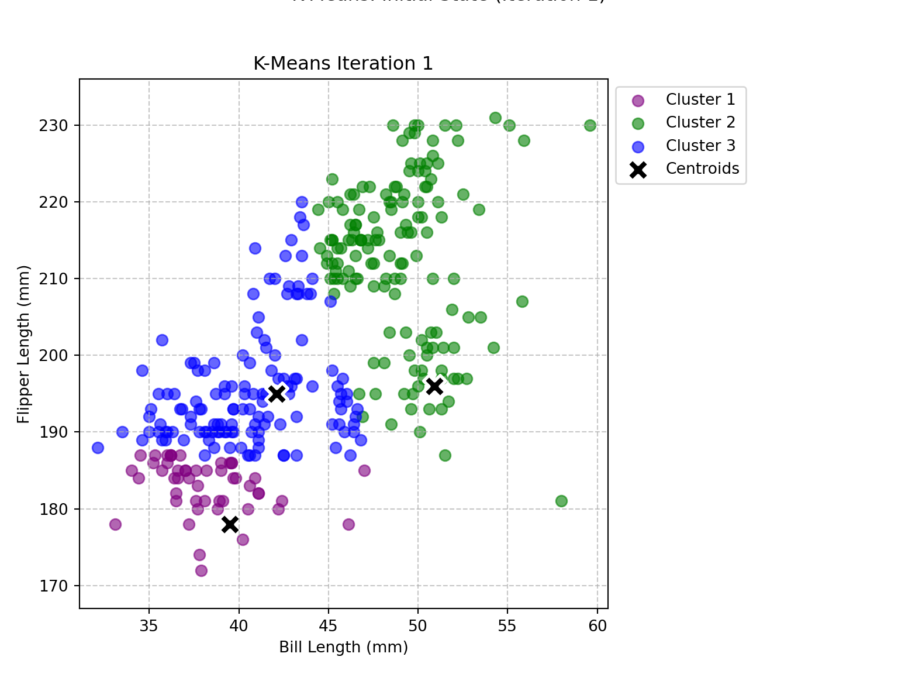
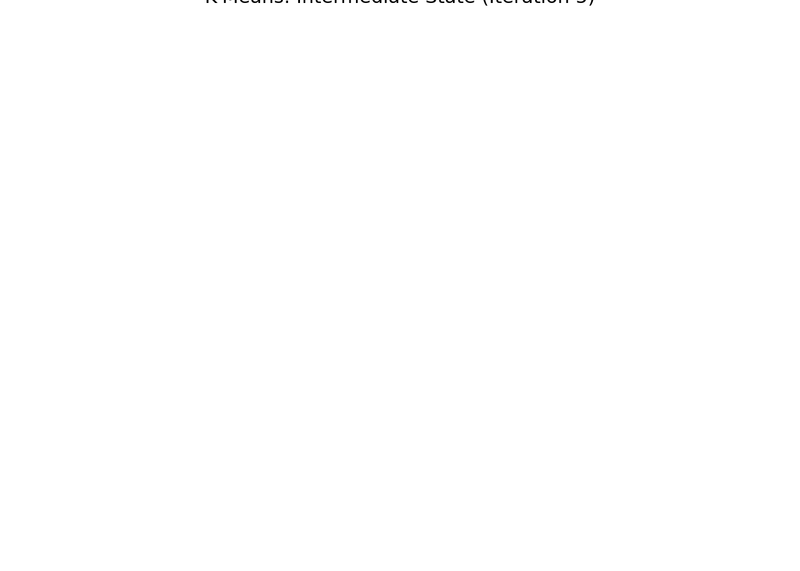
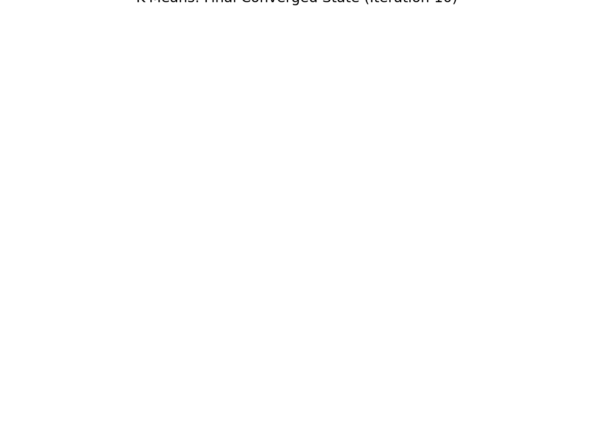

Demystifying ML in Marketing: K-Means, KNN & Key Driver Analysis Explained
Author
Sumedh Hambarde
Published
June 10, 2025
todo: do two analyses. Do one of either 1a or 1b, AND one of either 2a or 2b.
1. K-Means
Data Loading, exploration
To begin our journey into unsupervised machine learning, we’re utilizing the popular Palmer Penguins dataset. This dataset contains measurements for three species of penguins, offering a rich source of biological data. For our K-Means clustering exercise, we’re specifically focusing on two continuous morphological features: the bill_length_mm and flipper_length_mm. Our objective is to identify natural groupings or segments within the penguin population based solely on these two characteristics, without any prior knowledge of their species labels.
K-Means is an iterative, centroid-based clustering algorithm designed to partition n data points into k distinct clusters. The fundamental idea is simple: it aims to minimize the variance within each cluster. The algorithm proceeds by first initializing k centroids (representative points for each cluster). Then, it iteratively assigns each data point to the closest centroid, followed by updating the centroid’s position to be the mean of all points assigned to that cluster. This assignment and update process repeats until the centroids no longer shift significantly, indicating that the clusters have stabilized.
The Python code below implements this K-Means algorithm entirely from scratch, demonstrating a foundational understanding of its mechanics. It includes helper functions for calculating euclidean_distance, initialize_centroids randomly, assign_to_clusters based on proximity, and update_centroids by averaging. The main run_kmeans function orchestrates these steps, iterating until convergence. Crucially, this function also records the state of the centroids and cluster assignments at each iteration. This collection of iterative states will be invaluable for our next step: visually animating how the K-Means algorithm converges and forms clusters, providing a clear “behind-the-scenes” look at its operation. We conclude the block with a test run using K=3 to ensure the implementation is working correctly.
import pandas as pdpenguins = pd.read_csv('/home/jovyan/Desktop/MSBA work/Spring25/Marketing Analytics/website/projects/project4/data/palmer_penguins.csv')print(penguins.columns)
species island bill_length_mm ... body_mass_g sex year
0 Adelie Torgersen 39.1 ... 3750 male 2007
1 Adelie Torgersen 39.5 ... 3800 female 2007
[2 rows x 8 columns]
# Select the features for clusteringfeatures = penguins[['bill_length_mm', 'flipper_length_mm']]# Display the first few rows of the selected featuresprint("First 5 rows of selected features:")
import numpy as npimport pandas as pdimport matplotlib.pyplot as plt# Load the dataset (assuming 'palmer_penguins.csv' is in the same directory)penguins = pd.read_csv('/home/jovyan/Desktop/MSBA work/Spring25/Marketing Analytics/website/projects/project4/data/palmer_penguins.csv')# Select the features for clusteringfeatures = penguins[['bill_length_mm', 'flipper_length_mm']]def euclidean_distance(point1, point2):"""Calculates the Euclidean distance between two points."""return np.sqrt(np.sum((point1 - point2)**2))def initialize_centroids(data, k, random_state=None):"""Randomly initializes k centroids from the data points."""if random_state: np.random.seed(random_state) indices = np.random.choice(len(data), k, replace=False)return data.iloc[indices].valuesdef assign_to_clusters(data, centroids):"""Assigns each data point to the closest centroid.""" clusters = [[] for _ inrange(len(centroids))] labels = np.zeros(len(data), dtype=int)for i, point inenumerate(data.values): distances = [euclidean_distance(point, centroid) for centroid in centroids] closest_centroid = np.argmin(distances) clusters[closest_centroid].append(i) labels[i] = closest_centroidreturn clusters, labelsdef update_centroids(data, clusters):"""Recalculates centroids based on the mean of points in each cluster.""" new_centroids = np.zeros((len(clusters), data.shape[1]))for i, cluster_indices inenumerate(clusters):if cluster_indices: # Ensure the cluster is not empty new_centroids[i] = data.iloc[cluster_indices].mean(axis=0)return new_centroidsdef run_kmeans(data, k, max_iterations=100, random_state=None):""" Runs the K-Means algorithm and records states for visualization. Returns final centroids, final labels, and a list of states (centroids + labels) per iteration. """ data_np = data.values # Convert DataFrame to NumPy array for consistent operations centroids = initialize_centroids(data, k, random_state)# Store states for animation/visualization states = []for iteration inrange(max_iterations): clusters, labels = assign_to_clusters(data, centroids) states.append({'iteration': iteration, 'centroids': centroids.copy(), 'labels': labels.copy()}) new_centroids = update_centroids(data, clusters)# Check for convergence (centroids don't move significantly)if np.allclose(centroids, new_centroids):print(f"K-Means converged after {iteration +1} iterations.")break centroids = new_centroidselse:print(f"K-Means reached max iterations ({max_iterations}) without converging.")# Add final state if it wasn't added due to early convergenceifnot states or states[-1]['iteration'] != iteration: states.append({'iteration': iteration, 'centroids': centroids.copy(), 'labels': labels.copy()})return centroids, labels, states# --- Test the K-Means implementation with K=3 (for demonstration) ---# It's good practice to set a random_state for reproducibilityk_value =3final_centroids, final_labels, iteration_states = run_kmeans(features, k_value, random_state=42)
import numpy as npimport pandas as pdimport matplotlib.pyplot as pltimport matplotlib.animation as animation#from IPython.display import HTML # For displaying GIF in Jupyter/Quarto# Re-define functions and run K-Means to get iteration_states (due to independent code blocks)# This repeats the K-Means computation but ensures the plotting block has all necessary data# --- K-Means Functions (Copy-pasted from previous successful block) ---# Load the dataset (assuming 'palmer_penguins.csv' is in the same directory)penguins = pd.read_csv('/home/jovyan/Desktop/MSBA work/Spring25/Marketing Analytics/website/projects/project4/data/palmer_penguins.csv')# Select the features for clusteringfeatures = penguins[['bill_length_mm', 'flipper_length_mm']]def euclidean_distance(point1, point2):"""Calculates the Euclidean distance between two points."""return np.sqrt(np.sum((point1 - point2)**2))def initialize_centroids(data, k, random_state=None):"""Randomly initializes k centroids from the data points."""if random_state: np.random.seed(random_state) indices = np.random.choice(len(data), k, replace=False)return data.iloc[indices].valuesdef assign_to_clusters(data, centroids):"""Assigns each data point to the closest centroid.""" clusters = [[] for _ inrange(len(centroids))] labels = np.zeros(len(data), dtype=int)for i, point inenumerate(data.values): distances = [euclidean_distance(point, centroid) for centroid in centroids] closest_centroid = np.argmin(distances) clusters[closest_centroid].append(i) labels[i] = closest_centroidreturn clusters, labelsdef update_centroids(data, clusters):"""Recalculates centroids based on the mean of points in each cluster.""" new_centroids = np.zeros((len(clusters), data.shape[1]))for i, cluster_indices inenumerate(clusters):if cluster_indices: # Ensure the cluster is not empty new_centroids[i] = data.iloc[cluster_indices].mean(axis=0)return new_centroidsdef run_kmeans(data, k, max_iterations=100, random_state=None):""" Runs the K-Means algorithm and records states for visualization. Returns final centroids, final labels, and a list of states (centroids + labels) per iteration. """ data_np = data.values # Convert DataFrame to NumPy array for consistent operations centroids = initialize_centroids(data, k, random_state)# Store states for animation/visualization states = []for iteration inrange(max_iterations): clusters, labels = assign_to_clusters(data, centroids) states.append({'iteration': iteration, 'centroids': centroids.copy(), 'labels': labels.copy()}) new_centroids = update_centroids(data, clusters)# Check for convergence (centroids don't move significantly)if np.allclose(centroids, new_centroids):# Add the final converged state if it wasn't added by the loop conditionifnot states or states[-1]['iteration'] != iteration: states.append({'iteration': iteration, 'centroids': centroids.copy(), 'labels': labels.copy()})print(f"K-Means converged after {iteration +1} iterations.")break centroids = new_centroidselse: # This else block executes if the loop completes without a 'break'print(f"K-Means reached max iterations ({max_iterations}) without converging.")# Ensure the final state is always captured even if max_iterations is reachedifnot states or states[-1]['iteration'] != (max_iterations -1): # Check if last state was already added states.append({'iteration': max_iterations -1, 'centroids': centroids.copy(), 'labels': labels.copy()})return centroids, labels, states# --- Run K-Means to get iteration states ---k_value =3final_centroids, final_labels, iteration_states = run_kmeans(features, k_value, random_state=42)
K-Means converged after 10 iterations.
# --- Visualization Part ---# Set up the plot for animationfig, ax = plt.subplots(figsize=(8, 6))# Define colors for clusterscolors = ['purple', 'green', 'blue', 'orange', 'red', 'brown', 'pink']# Use unique colors up to K_MAX if you decide to make a single animation for different Ks later# For now, K=3, so 3 colors are enough.# Helper function to update the plot for each framedef update(frame): ax.clear() current_state = iteration_states[frame] current_centroids = current_state['centroids'] current_labels = current_state['labels'] iteration = current_state['iteration']# Plot data points colored by clusterfor i inrange(k_value): points_in_cluster = features.values[current_labels == i] ax.scatter(points_in_cluster[:, 0], points_in_cluster[:, 1], color=colors[i], label=f'Cluster {i+1}', s=50, alpha=0.6)# Plot centroids ax.scatter(current_centroids[:, 0], current_centroids[:, 1], marker='X', s=200, color='black', edgecolor='white', linewidth=2, label='Centroids') ax.set_title(f"K-Means Iteration {iteration +1}") ax.set_xlabel("Bill Length (mm)") ax.set_ylabel("Flipper Length (mm)") ax.legend(loc='upper left', bbox_to_anchor=(1,1)) # Place legend outside ax.grid(True, linestyle='--', alpha=0.7) ax.set_xlim(features['bill_length_mm'].min() -1, features['bill_length_mm'].max() +1) ax.set_ylim(features['flipper_length_mm'].min() -5, features['flipper_length_mm'].max() +5)# Create the animation# frames = len(iteration_states)# If your environment supports GIF, use this:# anim = animation.FuncAnimation(fig, update, frames=frames, interval=800, repeat=False)# plt.close() # Prevents extra static plot from appearing# To save as GIF or display in Quarto, additional setup might be needed# For now, let's just show the final plot and perhaps a few intermediate ones as static images# or simplify to just showing the animation object which Quarto might render.# As Quarto environments can vary in animation rendering, let's output a few key frames as static plots# and mention the possibility of GIF.yprint("\nGenerating static plots for key K-Means iterations:")
Generating static plots for key K-Means iterations:
# Plot initial state (Iteration 1)update(0)plt.suptitle("K-Means: Initial State (Iteration 1)", y=1.02) # Add super title above plot titleplt.tight_layout(rect=[0, 0, 0.85, 1]) # Adjust layout to make room for legendplt.show()

# Plot an intermediate state (e.g., halfway through)iflen(iteration_states) >1: mid_frame_idx = (len(iteration_states) //2) -1iflen(iteration_states) >2else0# Adjust for 0-indexing and minimum 2 states update(mid_frame_idx) plt.suptitle(f"K-Means: Intermediate State (Iteration {mid_frame_idx +1})", y=1.02) plt.tight_layout(rect=[0, 0, 0.85, 1]) plt.show()

# Plot the final state (Converged Iteration)update(len(iteration_states) -1)plt.suptitle(f"K-Means: Final Converged State (Iteration {len(iteration_states)})", y=1.02)plt.tight_layout(rect=[0, 0, 0.85, 1])plt.show()

print("\n--- Visualizations generated ---")
--- Visualizations generated ---
Validating with Scikit-learn’s K-means
Determining Optimal number of clusters
Conclusion: Insights from K-Means Clustering
todo: write your own code to implement the k-means algorithm. Make plots of the various steps the algorithm takes so you can “see” the algorithm working. Test your algorithm on the Palmer Penguins dataset, specifically using the bill length and flipper length variables. Compare your results to the built-in kmeans function in R or Python.
todo: Calculate both the within-cluster-sum-of-squares and silhouette scores (you can use built-in functions to do so) and plot the results for various numbers of clusters (ie, K=2,3,…,7). What is the “right” number of clusters as suggested by these two metrics?
1b. Latent-Class MNL
todo: Use the Yogurt dataset to estimate a latent-class MNL model. This model was formally introduced in the paper by Kamakura & Russell (1989); you may want to read or reference page 2 of the pdf, which is described in the class slides, session 4, slides 56-57.
The data provides anonymized consumer identifiers (id), a vector indicating the chosen product (y1:y4), a vector indicating if any products were “featured” in the store as a form of advertising (f1:f4), and the products’ prices in price-per-ounce (p1:p4). For example, consumer 1 purchased yogurt 4 at a price of 0.079/oz and none of the yogurts were featured/advertised at the time of consumer 1’s purchase. Consumers 2 through 7 each bought yogurt 2, etc. You may want to reshape the data from its current “wide” format into a “long” format.
todo: Fit the standard MNL model on these data. Then fit the latent-class MNL on these data separately for 2, 3, 4, and 5 latent classes.
todo: How many classes are suggested by the \(BIC = -2*\ell_n + k*log(n)\)? (where \(\ell_n\) is the log-likelihood, \(n\) is the sample size, and \(k\) is the number of parameters.) The Bayesian-Schwarz Information Criterion link is a metric that assess the benefit of a better log likelihood at the expense of additional parameters to estimate – akin to the adjusted R-squared for the linear regression model. Note, that a lower BIC indicates a better model fit, accounting for the number of parameters in the model.
todo: compare the parameter estimates between (1) the aggregate MNL, and (2) the latent-class MNL with the number of classes suggested by the BIC.
2a. K Nearest Neighbors
todo: use the following code (or the python equivalent) to generate a synthetic dataset for the k-nearest neighbors algorithm. The code generates a dataset with two features, x1 and x2, and a binary outcome variable y that is determined by whether x2 is above or below a wiggly boundary defined by a sin function.
# gen data -----set.seed(42)n <-100x1 <-runif(n, -3, 3)x2 <-runif(n, -3, 3)x <-cbind(x1, x2)# define a wiggly boundaryboundary <-sin(4*x1) + x1y <-ifelse(x2 > boundary, 1, 0) |>as.factor()dat <-data.frame(x1 = x1, x2 = x2, y = y)
todo: plot the data where the horizontal axis is x1, the vertical axis is x2, and the points are colored by the value of y. You may optionally draw the wiggly boundary.
todo: generate a test dataset with 100 points, using the same code as above but with a different seed.
todo: implement KNN by hand. Check you work with a built-in function – eg, class::knn() or caret::train(method="knn") in R, or scikit-learn’s KNeighborsClassifier in Python.
todo: run your function for k=1,…,k=30, each time noting the percentage of correctly-classified points from the test dataset. Plot the results, where the horizontal axis is 1-30 and the vertical axis is the percentage of correctly-classified points. What is the optimal value of k as suggested by your plot?
2b. Key Drivers Analysis
todo: replicate the table on slide 75 of the session 5 slides. Specifically, using the dataset provided in the file data_for_drivers_analysis.csv, calculate: pearson correlations, standardized regression coefficients, “usefulness”, Shapley values for a linear regression, Johnson’s relative weights, and the mean decrease in the gini coefficient from a random forest. You may use packages built into R or Python; you do not need to perform these calculations “by hand.”
If you want a challenge, add additional measures to the table such as the importance scores from XGBoost, from a Neural Network, or from any additional method that measures the importance of variables.